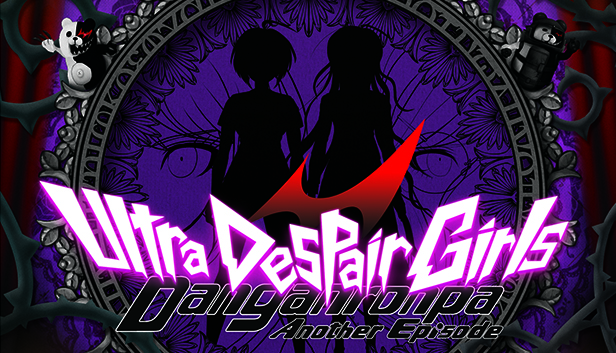

- Danganronpa: Trigger Happy Havoc
- Danganronpa 2: Goodbye Despair
- Danganronpa Another Episode: Ultra Despair Girls
- Danganronpa V3 Killing Harmony

Danganronpa Another Episode: Ultra Despair Girls is an action-adventure
video game developed by Spike Chunsoft for PlayStation Vita.
The game is a spin-off of the Danganronpa series of visual novel games,
set between the events of Danganronpa: Trigger Happy Havoc and
Danganronpa 2: Goodbye Despair. The game was released in Japan on September 25,
2014 and was released by NIS America in North America on September 1, 2015,
in Europe on September 4, 2015, and in Australia on September 10, 2015.
The game was released on PlayStation 4 and Windows worldwide in 2017.